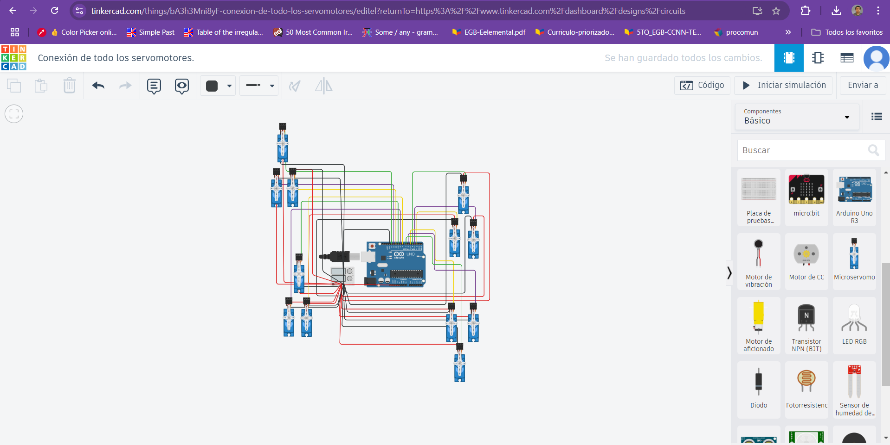
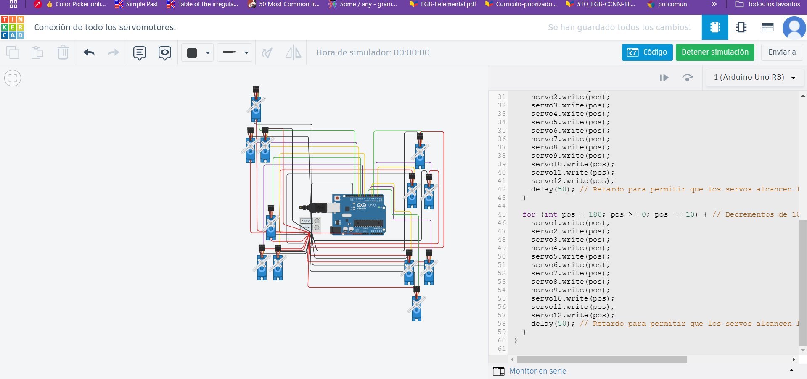

Actividad 5.
Actividad Previa: Configuración y Control de 12 Servomotores con Arduino Uno R3
Objetivo de la actividad:
Aprender a conectar y programar 12 servomotores en una placa Arduino Uno R3, asegurando el correcto funcionamiento mediante el uso de una fuente de alimentación externa.
Materiales necesarios:
Placa Arduino Uno R3.
12 servomotores.
Fuente de alimentación externa (5V con al menos 12A de capacidad).
Cables de conexión.
Protoboard (opcional, para distribuir la energía).
Condensadores de 1000 µF (opcional, para estabilizar el suministro eléctrico).
Cable USB para programar el Arduino.
Computadora con Arduino IDE instalado.
Instrucciones:
1. Preparar la conexión física:
Conectar los servos:
Conecta los cables de señal de los 12 servos a los pines digitales de la placa Arduino (pines 2 al 13).
Conecta los cables de alimentación (VCC y GND) de cada servo a una línea de alimentación externa (5V y GND).
Fuente de alimentación externa:
Conecta el positivo (+) de la fuente a la línea de alimentación de los servos.
Conecta el negativo (-) de la fuente al GND de los servos y también al GND del Arduino.
Estabilización (opcional):
Si es posible, conecta un condensador de 1000 µF entre el positivo y el negativo de la línea de alimentación de los servos.
Código del movimiento de los servomotores:
#include <Servo.h>
// Crear objetos Servo para los 12 servomotores
Servo servo1, servo2, servo3, servo4, servo5, servo6, servo7, servo8, servo9, servo10, servo11, servo12;
// Declarar los pines a los que están conectados los servos
int servoPins[] = {2, 3, 4, 5, 6, 7, 8, 9, 10, 11, 12, 13};
void setup() {
// Asignar cada servo a su pin correspondiente
servo1.attach(servoPins[0]);
servo2.attach(servoPins[1]);
servo3.attach(servoPins[2]);
servo4.attach(servoPins[3]);
servo5.attach(servoPins[4]);
servo6.attach(servoPins[5]);
servo7.attach(servoPins[6]);
servo8.attach(servoPins[7]);
servo9.attach(servoPins[8]);
servo10.attach(servoPins[9]);
servo11.attach(servoPins[10]);
servo12.attach(servoPins[11]);
}
void loop() {
// Mover cada servo de 0° a 180° y luego regresar
for (int pos = 0; pos <= 180; pos += 10) { // Incrementos de 10 grados
servo1.write(pos);
servo2.write(pos);
servo3.write(pos);
servo4.write(pos);
servo5.write(pos);
servo6.write(pos);
servo7.write(pos);
servo8.write(pos);
servo9.write(pos);
servo10.write(pos);
servo11.write(pos);
servo12.write(pos);
delay(50); // Retardo para permitir que los servos alcancen la posición
}
for (int pos = 180; pos >= 0; pos -= 10) { // Decrementos de 10 grados
servo1.write(pos);
servo2.write(pos);
servo3.write(pos);
servo4.write(pos);
servo5.write(pos);
servo6.write(pos);
servo7.write(pos);
servo8.write(pos);
servo9.write(pos);
servo10.write(pos);
servo11.write(pos);
servo12.write(pos);
delay(50); // Retardo para permitir que los servos alcancen la posición
}
}

